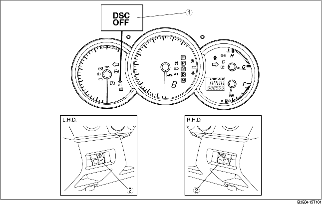

• When the DSC system and CAN lines are functionally normally, the DSC OFF light illuminates for approx. 1.8 s when the ignition switch is turned to the ON position to check the light function.
• When the DSC OFF switch is pressed to disable DSC control, the DSC OFF light illuminates.

.